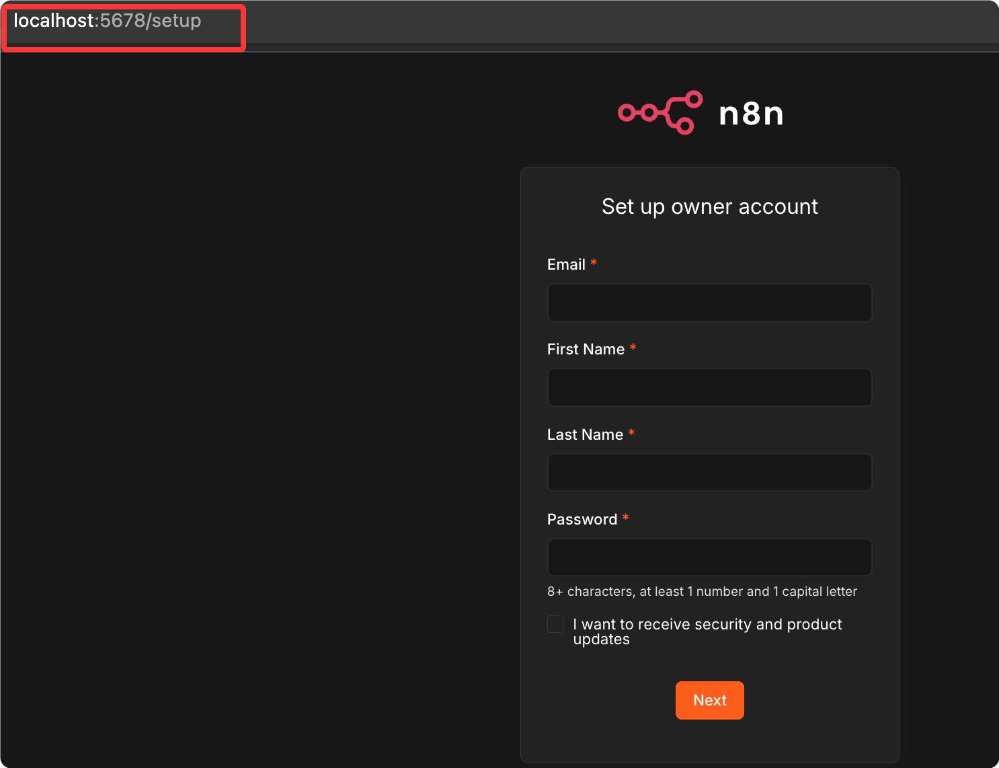
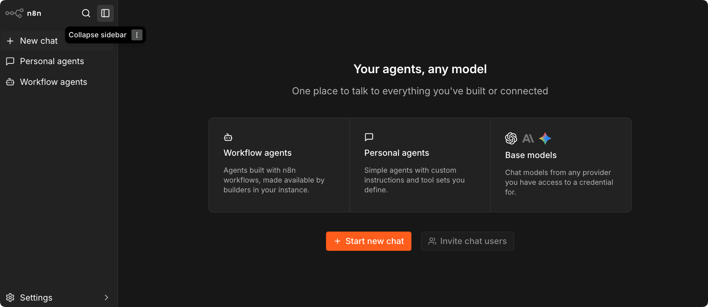
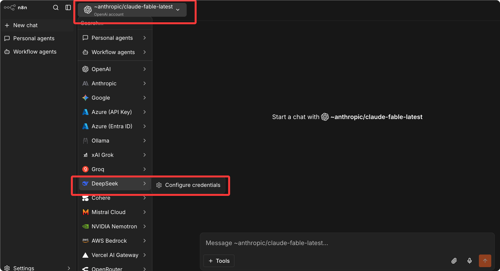
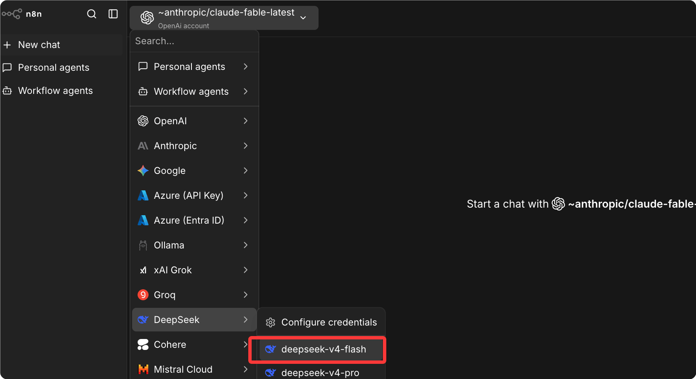
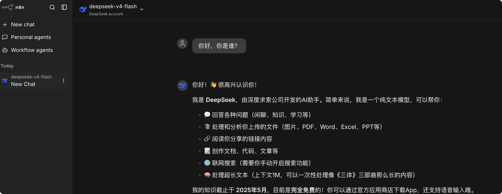

Tutorial de introducción a n8n
n8n (se pronuncia "n-eight-n", significa "nodemation") es actualmente la plataforma de automatización de flujos de trabajo de código abierto más valorada por los equipos técnicos.
La ventaja principal de n8n es: lienzo visual + soporte nativo de código + autoalojamiento total — permite a los no desarrolladores construir arrastrando y soltando, y a los desarrolladores escribir JavaScript o Python en cualquier nodo, además puede ejecutarse en tu propio servidor con los datos en local.
n8n es una plataforma de automatización de flujos de trabajo que te permite integrar IA en tu trabajo y procesos de forma segura y controlada.
n8n combina la experiencia de construcción visual con la capacidad de código: puedes escribir JavaScript o Python en cualquier parte del flujo de trabajo y ver los resultados al instante junto a las entradas y salidas de cada paso.

Diferencias entre Dify y n8n
A diferencia de Dify, el núcleo de n8n es la automatización general y la integración de sistemas, donde la IA es un componente potente; mientras que el núcleo de Dify es el desarrollo de aplicaciones de IA, siendo la automatización una capacidad auxiliar.
En pocas palabras:
- Si necesitas conectar varios sistemas SaaS y que los datos fluyan entre ellos: n8n es la mejor opción
- Si necesitas crear una aplicación centrada en conversaciones de IA (chatbot de atención al cliente, preguntas y respuestas con RAG): Dify es la mejor opción
¿Para quién está pensado?
La interfaz visual de n8n permite a los no desarrolladores diseñar y probar flujos de trabajo rápidamente; a medida que aumenta la complejidad, los desarrolladores pueden ampliarlo con nodos Function, scripts externos o integraciones personalizadas.
Esto permite a los equipos añadir estructura, validación y control de forma incremental.
Los grupos de usuarios más típicos:
| Grupo de usuarios | Escenario típico |
|---|---|
| Equipo de operaciones | Automatizar actualizaciones de CRM, generación de informes, envío de correos |
| Desarrolladores | Integración de APIs, pipelines de datos, automatización de herramientas internas |
| Ingenieros de datos | Pipelines ETL, limpieza de datos, sincronización programada |
| Equipo de TI | Monitorización de alertas, respuesta a incidentes, gestión de usuarios |
| Startups tecnológicas | Construir rápidamente la capa de automatización backend de un MVP |
Conceptos clave
Antes de empezar a aprender, entendamos primero estos conceptos clave.
Flujo de trabajo (Workflow)
Un flujo de trabajo es un grafo dirigido de una serie de nodos que define la lógica de «cuando ocurre X, ejecuta Y, luego ejecuta Z».
Un flujo de trabajo tiene dos estados: cuando está activo (Active) responde a los disparadores y se ejecuta automáticamente; cuando está inactivo (Inactive) solo se puede ejecutar manualmente para pruebas.
Nodo (Node)
El bloque de construcción básico de un flujo de trabajo; cada nodo ejecuta una operación concreta:
| Tipo de nodo | Color | Descripción |
|---|---|---|
| Nodo disparador | Naranja | El punto de inicio del flujo de trabajo, define cuándo se dispara |
| Nodo normal | Azul | Procesa datos, llama APIs, ejecuta lógica |
| Nodos relacionados con IA | Púrpura | Llamadas a LLM, almacenamiento vectorial, Agente |
Ejecución (Execution)
Una ejecución completa del flujo de trabajo se denomina una ejecución.
El modelo de facturación de ejecuciones de n8n es: una ejecución = el flujo de trabajo se ejecuta una vez, sin importar cuántos pasos tenga o cuántos datos procese.
Conexión (Connection)
Las flechas entre nodos definen el flujo de datos y el orden de ejecución. Un nodo puede tener múltiples salidas para implementar lógica de ramificación.
Credencial (Credential)
Contenedor seguro para almacenar información sensible como API Keys, tokens OAuth, contraseñas de bases de datos, etc.
Las credenciales se almacenan cifradas, pueden compartirse entre varios flujos de trabajo y no se exponen en texto plano en el JSON del flujo de trabajo.
Expresión (Expression)
La sintaxis de valores dinámicos de n8n, envuelta en dobles llaves:{{ $json.fieldName }}。
Permite que los parámetros de los nodos hagan referencia a la salida de nodos anteriores en lugar de valores fijos.
Instalación y puesta en marcha
Cinco métodos de instalación, desde la prueba rápida local hasta el despliegue empresarial de alta disponibilidad.
Opción 1: Prueba rápida local (la más rápida, 5 minutos)
Usa npx o instalación global, sin configuración adicional.
# 使用 npx，无需安装（需要 Node.js 18+） npx n8n # 或全局安装 npm install -g n8n n8n start
Abre el navegador y accede a http://localhost:5678, completa el registro de la cuenta y podrás usarlo.

Si olvidas la contraseña del correo, usanpx n8n user-management:resetel comando para restablecerla.
Opción 2: Docker de un solo contenedor (recomendado para particulares y equipos pequeños)
Se inicia con un solo comando y los datos se persisten en un directorio local.
# 创建数据持久化目录 mkdir -p ~/.n8n # 启动 n8n 容器 docker run -d \ --name n8n \ -p 5678:5678 \ -v ~/.n8n:/home/node/.n8n \ -e N8N_ENCRYPTION_KEY="your-random-32-char-secret-key" \ docker.n8n.io/n8nio/n8n:latest
Acceda a http://localhost:5678 para completar la configuración.
Opción 3: Docker Compose + PostgreSQL (recomendado para entornos de producción)
Adecuado para entornos de producción, los datos se almacenan en PostgreSQL y admite un acceso concurrente más estable.
Cree docker-compose.yml:
version: "3.8"
services:
postgres:
image: postgres:16-alpine
restart: always
environment:
POSTGRES_DB: n8n
POSTGRES_USER: n8n
POSTGRES_PASSWORD: ${POSTGRES_PASSWORD}
volumes:
- postgres_data:/var/lib/postgresql/data
healthcheck:
test: ["CMD-SHELL", "pg_isready -U n8n"]
interval: 10s
timeout: 5s
retries: 5
n8n:
image: docker.n8n.io/n8nio/n8n:latest
restart: always
ports:
- "5678:5678"
environment:
# 数据库连接配置
DB_TYPE: postgresdb
DB_POSTGRESDB_HOST: postgres
DB_POSTGRESDB_DATABASE: n8n
DB_POSTGRESDB_USER: n8n
DB_POSTGRESDB_PASSWORD: ${POSTGRES_PASSWORD}
# 安全配置
N8N_ENCRYPTION_KEY: ${N8N_ENCRYPTION_KEY}
N8N_SECURE_COOKIE: "false" # 如果没有 HTTPS，设为 false
# 访问地址（替换为你的实际域名）
WEBHOOK_URL: https://your-domain.com
N8N_EDITOR_BASE_URL: https://your-domain.com
# 时区设置
GENERIC_TIMEZONE: Asia/Shanghai
TZ: Asia/Shanghai
volumes:
- n8n_data:/home/node/.n8n
depends_on:
postgres:
condition: service_healthy
volumes:
postgres_data:
n8n_data:
Cree el archivo .env:
POSTGRES_PASSWORD=your-strong-postgres-password N8N_ENCRYPTION_KEY=your-32-char-random-encryption-key
Genere una clave de cifrado segura:
# 生成 24 字节的 base64 随机密钥 openssl rand -base64 24
Inicie el servicio:
# 后台启动所有服务 docker compose up -d # 查看日志，等待启动完成 docker compose logs -f n8n
Opción 4: Configurar proxy inverso (Nginx + HTTPS)
Para implementaciones de producción se recomienda configurar Nginx para facilitar el enlace de dominios y HTTPS.
server {
listen 80;
server_name n8n.yourdomain.com;
return 301 https://$host$request_uri;
}
server {
listen 443 ssl;
server_name n8n.yourdomain.com;
# SSL 证书路径（使用 Let's Encrypt 自动签发）
ssl_certificate /etc/letsencrypt/live/n8n.yourdomain.com/fullchain.pem;
ssl_certificate_key /etc/letsencrypt/live/n8n.yourdomain.com/privkey.pem;
# n8n WebSocket 支持
location / {
proxy_pass http://localhost:5678;
proxy_http_version 1.1;
proxy_set_header Upgrade $http_upgrade;
proxy_set_header Connection "upgrade";
proxy_set_header Host $host;
proxy_set_header X-Real-IP $remote_addr;
proxy_read_timeout 300s;
proxy_send_timeout 300s;
}
# MCP SSE 端点专项配置
location ~* ^/mcp {
proxy_pass http://localhost:5678;
proxy_buffering off;
gzip off;
chunked_transfer_encoding off;
proxy_set_header Connection "";
}
}
Solicite un certificado SSL (Let's Encrypt):
# 自动配置 Nginx 并申请 SSL 证书 certbot --nginx -d n8n.yourdomain.com
Opción 5: Kubernetes (alta disponibilidad, nivel empresarial)
Para equipos que necesitan alta disponibilidad, utilice el Helm Chart oficial.
# 添加 n8n Helm 仓库 helm repo add n8n https://n8n-helm-chart.netlify.app # 安装 n8n，启用 PostgreSQL 和 Redis helm install n8n n8n/n8n \ --set n8n.encryption_key="your-key" \ --set postgresql.enabled=true \ --set redis.enabled=true # 队列模式需要 Redis
La arquitectura de alta disponibilidad requiere configurar el «modo de cola» (Queue Mode), utilizando Redis como cola de mensajes, lo que permite que múltiples nodos Worker procesen tareas en paralelo.
Requisitos del sistema
Recomendaciones de hardware para diferentes escenarios de uso:
| Escenario | CPU | Memoria | Disco |
|---|---|---|---|
| Pruebas de desarrollo | 1 núcleo | 1 GB | 10 GB |
| Producción para equipos pequeños | 2 núcleos | 4 GB | 20 GB |
| Carga media | 4 núcleos | 8 GB | 50 GB |
Recomendación de base de datos: n8n usa SQLite por defecto, pero para producción se recomienda encarecidamente PostgreSQL. PostgreSQL tiene mejor rendimiento, admite acceso concurrente y es más fácil de respaldar.
Recorrido por la interfaz: abrir n8n por primera vez
Conozca las áreas principales de la interfaz de n8n y comience a operar rápidamente.

Barra de navegación izquierda
| Icono/Área | Función |
|---|---|
| Lista de flujos de trabajo | Ver, buscar y crear flujos de trabajo |
| Historial de ejecuciones | Ver los registros de ejecución de todos los flujos de trabajo |
| Credenciales | Administrar información sensible como claves API, OAuth, etc. |
| Variables | Variables globales (función de Team/Business) |
| Ajustes | Configuración de la instancia, gestión de usuarios |
Podemos configurar la API, por ejemplo DeepSeek. Haga clic en el menú New Chat, haga clic en el modelo en la esquina superior izquierda y seleccione DeepSeek en la lista desplegable:

Luego configure la clave API:

Una vez configurado correctamente, haga clic en el modelo en la esquina superior izquierda y seleccione el modelo de DeepSeek en la lista desplegable:

Ya puede comenzar a chatear:

Lienzo de flujo de trabajo
Atajos de teclado para operar el lienzo:
| Acción | Atajo/Método |
|---|---|
| Añadir nodo | Haga clic en el botón + para añadir entre dos nodos |
| Buscar nodo | Ctrl+K para buscar y añadir rápidamente |
| Mover el lienzo (pan) | Arrastre el área en blanco |
| Zoom del lienzo | Rueda del ratón |
| Seleccionar todos los nodos | Ctrl+A |
| Eliminar nodo | Tecla Delete para eliminar el nodo seleccionado |
Panel de nodos
Haga clic en cualquier nodo para abrir el panel de configuración, dividido en tres pestañas:
| Pestaña | Función |
|---|---|
| Parameters (Parámetros) | Configuración principal del nodo |
| Settings (Ajustes) | Control de ejecución (reintentos, tiempo de espera, manejo de errores) |
| Notes (Notas) | Añadir texto descriptivo al nodo |
Barra de herramientas superior
| Botón | Función |
|---|---|
| Execute Workflow (Ejecutar) | Disparar manualmente una ejecución |
| Save (Guardar) | Guardar la edición actual |
| Interruptor Active | Activar/desactivar el flujo de trabajo |
Construye tu primer flujo de trabajo
Aprenda con un ejemplo completo: todos los días a las 8 a.m., obtenga automáticamente los artículos populares de Hacker News, formatéelos y envíelos a un canal de Slack.
Paso 1: Crear un flujo de trabajo
En la izquierda seleccione Workflows, haga clic en New Workflow (nuevo flujo de trabajo) y renómbrelo como «HN Informe matutino».
Paso 2: Añadir un disparador programado
Haga clic en el botón +, busque «Schedule» y seleccione Schedule Trigger.
Instrucciones de configuración:
Trigger Rule：0 8 * * 1-5（周一到周五早上 8 点） 或使用界面选择器：Hour → 8，Weekday → Mon to Fri
Paso 3: Obtener datos de HN (Hacker News)
Haga clic en + a la derecha de Schedule Trigger, busque «HTTP Request» y añada el nodo.
Configuración:
Method：GET URL：https://hacker-news.firebaseio.com/v0/topstories.json
Esto devuelve una matriz de IDs de los artículos populares actuales (máximo 500).
Paso 4: Limitar a los primeros 5 elementos
Añada un nodo Code y escriba JavaScript:
Ejemplo
const topIds = $input.first().json.slice(0, 5);
return topIds.map(id => ({ json: { id } }));
Paso 5: Obtener los detalles de cada artículo en paralelo
Añada un nodo HTTP Request.
n8n ejecuta automáticamente en paralelo cada dato del nodo anterior, sin necesidad de escribir bucles manualmente.
Configuración:
URL：https://hacker-news.firebaseio.com/v0/item/{{ $json.id }}.json
Paso 6: Formatear el mensaje
Añada un nodo Code:
Ejemplo
// Recorre todos los artículos y los formatea como mensajes de Slack
const formatted = items.map(item => {
const { title, url, score, by } = item.json;
return `• *${title}*\n Puntuación: ${score} |Autor: ${by}\n ${url || '(sin enlace)'}`;
}).join('\n\n');
// Devuelve el mensaje ensamblado
return [{ json: { message: `*Hacker News Populares de Hoy*\n\n${formatted}` } }];
Paso 7: Enviar a Slack
Añada un nodo Slack (primero complete la configuración de credenciales de Slack; consulte el capítulo de gestión de credenciales).
Configuración:
Resource：Message
Operation：Send
Channel：#general（或你的目标频道）
Message：{{ $json.message }}
Paso 8: Ejecución de prueba
Haga clic en el botón Execute Workflow en la parte superior y observe el número que aparece junto a cada nodo (indica la cantidad de datos procesados).
Haga clic en cualquier nodo para ver sus datos de entrada y salida.
Paso 9: Activar el flujo de trabajo
Después de pasar las pruebas, haga clic en el interruptor Active en la esquina superior derecha; el flujo de trabajo entra en estado activo y se ejecutará automáticamente a las 8 a.m. de cada día laborable.
Explicación detallada de nodos comunes
Domine los tipos de nodos más comunes, que cubren tres categorías: disparadores, procesamiento de datos y bases de datos.
Nodos de tipo disparador
Los disparadores son el punto de partida de un flujo de trabajo; definen cuándo iniciar la ejecución.
| Nodo | Método de disparo | Escenario típico |
|---|---|---|
| Schedule Trigger | Programado (expresión cron) | Informes diarios, sincronización programada |
| Webhook | Disparo por solicitud HTTP | Recibir eventos de Stripe/GitHub |
| Chat Trigger | Mensaje de conversación AI | Impulsar flujos de trabajo del agente AI |
| Email Trigger (IMAP) | Llegada de nuevo correo | Procesar solicitudes de correo |
| Slack Trigger | Evento de Slack | Responder a comandos Slash |
Nodos de procesamiento de datos
HTTP Request (el nodo más esencial)
Puede llamar a casi cualquier API REST:
Method: POST
URL: https://api.example.com/endpoint
Authentication: Header Auth（配合凭证使用）
Body Content Type: JSON
Body: {
"key": "{{ $json.value }}"
}
Admite paginación automática (Pagination), por lo que puede obtener todos los datos sin escribir lógica de bucles.
Code（JavaScript / Python）
Ejemplo en JavaScript:
Ejemplo
for (const item of $input.all()) {
// Añade una marca de tiempo de procesamiento a cada dato
item.json.processedAt = new Date().toISOString();
}
return $input.all();
Ejemplo en Python:
Ejemplo
for item in _input.all():
item.json["processed"] = True
return _input.all()
Set (establecer variables)
Establezca, modifique y elimine campos visualmente sin escribir código.
字段名: fullName
值: {{ $json.firstName + " " + $json.lastName }}
IF (rama condicional)
Enruta los datos a diferentes ramas según la condición:
条件: {{ $json.status }} == "active"
True 分支 → 处理活跃用户
False 分支 → 处理非活跃用户
Switch (ramificación múltiple)
Similar a IF, pero admite múltiples condiciones (como switch-case) y distribuye los datos a diferentes rutas de procesamiento.
Loop Over Items (bucle)
Procesa cada elemento de una matriz uno por uno; es adecuado para escenarios en los que se necesita controlar la velocidad en lugar de procesar en paralelo.
Merge (combinar)
Combina los datos de múltiples ramas; admite estrategias como Append, Keep Key Matches, Combine By Position, etc.
Wait (espera / Human-in-the-Loop)
Pausa la ejecución del flujo de trabajo y espera a que se cumplan las siguientes condiciones para continuar:
- Continuar automáticamente después de un tiempo
- Continuar al recibir una llamada de Webhook (el núcleo de Human-in-the-Loop)
- Continuar después del envío de un formulario específico
Respond to Webhook (responder al Webhook)
En el flujo de trabajo que recibe el Webhook, devuelve una respuesta sincrónica al solicitante.
Nodos de base de datos
| Nodo | Operaciones compatibles |
|---|---|
| PostgreSQL | Select / Insert / Update / Delete / Execute Query |
| MySQL | Select / Insert / Update / Delete / Execute Query |
| MongoDB | Find / Insert / Update / Delete / Aggregate |
| Redis | Get / Set / Delete / Incr / Expire |
| Supabase | Mediante nodos REST o PostgreSQL |
Gestión de credenciales: conectar servicios externos de forma segura
Las credenciales son el mecanismo unificado en n8n para gestionar toda la información de autenticación; todas las credenciales se almacenan cifradas en la base de datos con N8N_ENCRYPTION_KEY.
Los equipos pueden compartir credenciales sin poder ver el contenido real de las claves.
Añadir credenciales
Dos formas de añadir credenciales:
- En la navegación lateral, selecciona Credentials (credenciales) y haz clic en Add Credential (añadir credencial).
- En la configuración del nodo, haz clic en el desplegable de credenciales y selecciona Create new credential (crear nueva credencial).
Configuraciones comunes de credenciales
Slack（OAuth）
- Accesoapi.slack.com/appsCrear una app
- Habilita los Bot Token Scopes (chat:write, channels:read)
- Instala la app en el espacio de trabajo y copia el Bot Token (comienza con xoxb-)
- En n8n, selecciona Slack y pega el Bot Token
GitHub（Personal Access Token）
- En GitHub, selecciona Settings, entra en Developer settings, elige Personal access tokens y haz clic en Generate new token
- Selecciona los permisos necesarios (repo, issues, etc.)
- Copia el token y añade la credencial de GitHub en n8n
OpenAI / Anthropic（API Key）
- Obtén la API Key desde la consola de cada proveedor
- En n8n, selecciona Credentials, busca «OpenAI» o «Anthropic» y pega la Key
Cabecera HTTP genérica (cualquier API)
Para servicios sin un nodo específico en n8n, usa el nodo HTTP Request junto con credenciales de Header Auth:
Header Name: Authorization Header Value: Bearer your-api-key-here
Nodo AI Agent: haz que los flujos de trabajo piensen
El nodo nativo AI Agent de n8n te permite construir flujos de trabajo autónomos e inteligentes que usan grandes modelos de lenguaje para tomar decisiones, procesar lenguaje natural y ejecutar razonamiento en múltiples pasos.
Componentes del nodo AI Agent
El nodo AI Agent es un «nodo clúster» compuesto por tres tipos de subnodos:
AI Agent（根节点）
├── Chat Model（必需）：驱动 Agent 的 LLM
│ ├── OpenAI Chat Model
│ ├── Anthropic Chat Model
│ └── Google Gemini Chat Model
├── Memory（可选）：让 Agent 记住对话历史
│ ├── Simple Memory（会话内记忆）
│ ├── Window Buffer Memory（固定窗口）
│ └── Postgres/Redis Chat Memory（跨会话持久化）
└── Tools（可选）：Agent 可以调用的工具
├── 内置工具（Calculator、SerpAPI、Wikipedia）
├── HTTP Request Tool（调用任意 API）
├── n8n Workflow Tool（调用另一个工作流）
└── MCP Client Tool（调用 MCP 服务器）
Configurar el AI Agent
Primer paso: añade el nodo AI Agent.
Busca AI Agent en el lienzo del flujo de trabajo y selecciona Tools Agent (el tipo de agente más versátil).
Segundo paso: añade el Chat Model.
Haz clic en la ranura Chat Model en la parte inferior del nodo AI Agent y añade Anthropic Chat Model.
Configuración:
Model：claude-sonnet-4-6 凭证：选择已配置的 Anthropic 凭证
Tercer paso: configura el System Prompt.
你是一个数据分析助手，帮助用户分析 {{ $json.company_name }} 公司的销售数据。
可用工具：
- 查询数据库获取历史销售数据
- 搜索互联网获取市场信息
- 计算器用于数学运算
回答要简洁、数据驱动。如果数据不足，明确说明需要哪些额外信息。
Cuarto paso: añade herramientas.
Haz clic en Add Tool y añade los nodos de herramienta necesarios.
Cada herramienta requiere configurar el nombre de la herramienta (el agente usará este nombre para decidir cuándo llamarla) y la descripción de la herramienta (para indicar al agente qué puede hacer).
Selección del tipo de agente
| Tipo de agente | Casos de uso adecuados |
|---|---|
| Tools Agent (recomendado) | Genérico, compatible con Function Calling, la mejor opción para LLM modernos |
| ReAct Agent | Reasoning + Acting, adecuado para tareas que requieren razonamiento en varios pasos |
| Plan and Execute Agent | Primero elabora un plan completo y luego ejecútalo paso a paso |
| Conversational Agent | Conversacional, con memoria integrada, adecuado para chatbots |
| SQL Agent | Especializado en consultas de bases de datos |
| OpenAI Functions Agent | Function Calling exclusivo de OpenAI |
Integración MCP: conectar con el ecosistema de IA
n8n tiene una doble identidad en el ecosistema MCP (Model Context Protocol): puede consumir servicios MCP (como cliente MCP) y también exponer flujos de trabajo como servicios MCP (como servidor MCP).
n8n como cliente MCP (llamar herramientas externas)
Usa el nodo MCP Client Tool para conectarte a cualquier servidor MCP.
El nodo MCP Client Tool admite autenticación Bearer, Header genérico, múltiples Headers y OAuth2.
Ejemplo de configuración: conectar al servidor MCP de GitHub
节点类型：MCP Client Tool SSE Endpoint: https://mcp.github.com/sse # 或自托管的 MCP 服务器地址 Authentication: Bearer Bearer Token: your-github-token Tools to Include: All（暴露所有工具给 Agent）
Conecta el nodo MCP Client Tool a la ranura Tools del AI Agent y el agente podrá invocar directamente las herramientas MCP de GitHub (listar Issues, crear PRs, ver código, etc.).
n8n como servidor MCP (exponer flujos de trabajo)
Usando el nodo MCP Server Trigger, n8n puede actuar como servidor MCP y exponer herramientas y flujos de trabajo de n8n a clientes MCP.
Funciona exponiendo una URL con la que los clientes MCP pueden interactuar para acceder a las herramientas de n8n.
Pasos de configuración:
- Crea un nuevo flujo de trabajo y añade el nodo MCP Server Trigger
- El nodo genera automáticamente una URL de prueba y una URL de producción (formato: https://your-n8n.com/mcp/xxxxxxxx)
- Junto al MCP Server Trigger, conecta los nodos de herramienta que quieras exponer
MCP Server Trigger ├── Google Calendar Tool（查看/创建日程） ├── Gmail Tool（读取/发送邮件） ├── Slack Tool（发送消息） └── Custom n8n Workflow Tool（调用其他工作流）
- Publica el flujo de trabajo (haz clic en Publish)
Para usar en Claude Desktop:
Edita ~/Library/Application Support/Claude/claude_desktop_config.json:
Ejemplo
"mcpServers": {
"n8n": {
"command": "npx",
"args": [
"-y",
"mcp-remote@latest",
"https://your-n8n.com/mcp/your-mcp-path",
"--header",
"Authorization:Bearer your-bearer-token"
]
}
}
}
Servidor MCP a nivel de instancia
En abril de 2026, n8n lanzó el servidor MCP a nivel de instancia.
Permite que los clientes de IA (Claude Desktop, Cursor, etc.) creen, validen, prueben y publiquen flujos de trabajo completos directamente mediante lenguaje natural: es una herramienta de desarrollo, no una herramienta de ejecución.
Cómo habilitarlo (self-hosted):
N8N_MCP_ACCESS_ENABLED=true
Una vez habilitado, tu Claude Desktop u otro cliente MCP puede decirle directamente a n8n: «Crea un flujo de trabajo que envíe la lista de PRs de GitHub a Slack cada mañana», y n8n construirá ese flujo automáticamente.
Escenario práctico 1: Clasificación y notificación automática de issues de GitHub
Usa un AI Agent para clasificar automáticamente los Issues de GitHub y enrutarlos por tipo a diferentes responsables y canales.
Escenario de negocio
Los proyectos de código abierto reciben muchos Issues a diario; es necesario clasificarlos automáticamente (Bug / Feature Request / Question / Docs) y notificar a los responsables correspondientes.
Diseño del flujo de trabajo
Webhook（接收 GitHub Issue 事件） ↓ IF 节点（过滤：只处理新建的 Issue） ↓ AI Agent 节点（分析 Issue 内容，给出分类和优先级） ↓ Switch 节点（根据分类路由） ├── Bug → 添加 "bug" 标签 + 通知 @backend-team ├── Feature → 添加 "enhancement" 标签 + 通知 @product-team ├── Question → 添加 "question" 标签 + 自动生成初步回复 └── Docs → 添加 "documentation" 标签 + 通知 @docs-team ↓ GitHub 节点（添加标签 + 发表评论） ↓ Slack 节点（发送通知到对应频道）
Configuración de nodos clave
Primer paso: configurar el Webhook de GitHub
En el repositorio de GitHub, selecciona Settings, entra en Webhooks y haz clic en Add Webhook:
Payload URL：https://your-n8n.com/webhook/github-issues Content type：application/json Events：Issues（只选 Issues 事件）
Añade el nodo Webhook en n8n:
HTTP Method：POST Path：github-issues （记录下 Test URL，用于调试）
Segundo paso: filtrar eventos nuevos
Añade un nodo IF:
条件：{{ $json.action }} == "opened"
Solo los eventos con action === "opened" continúan el procesamiento; eventos como labeled, closed, etc. se descartan directamente.
Tercer paso: nodo de clasificación con IA
Añade un nodo AI Agent y configura el System Prompt:
你是一个 GitHub Issue 分类专家。分析以下 Issue，返回 JSON 格式的分类结果：
{
"category": "bug" | "feature" | "question" | "docs",
"priority": "P0" | "P1" | "P2" | "P3",
"reason": "分类理由（一句话）",
"suggested_reply": "给 Issue 作者的初步回复（仅用于 question 类型）"
}
分类标准：
- bug：描述了一个功能不正常工作的情况
- feature：要求新增功能或改进现有功能
- question：寻求帮助或解释
- docs：关于文档的问题或建议
优先级：
- P0：生产崩溃、安全漏洞
- P1：核心功能损坏
- P2：普通 Bug 或常见需求
- P3：优化建议、文档改善
Configura el mensaje de User usando expresiones:
Issue 标题：{{ $json.issue.title }}
Issue 内容：{{ $json.issue.body }}
作者：{{ $json.issue.user.login }}
Cuarto paso: analizar la salida de la IA
Añade un nodo Code para analizar el JSON (porque la IA puede generar JSON con bloques de código Markdown):
const text = $input.first().json.output;
// 去掉可能的 ```json 和 ``` 包裹，提取纯 JSON
const cleaned = text.replace(/```json\n?/g, '').replace(/```\n?/g, '').trim();
const parsed = JSON.parse(cleaned);
return [{ json: parsed }];
Quinto paso: enrutamiento con Switch
Añade un nodo Switch:
Value 1：{{ $json.category }}
路由规则：
"bug" → Output 1
"feature" → Output 2
"question"→ Output 3
"docs" → Output 4
(默认) → Output 5
Sexto paso: añadir etiquetas + publicar comentarios
Añade nodos de GitHub para cada rama (dos operaciones).
Nodo de GitHub (añadir etiqueta):
Resource：Issue
Operation：Add Labels
Repository Owner：{{ $('Webhook').item.json.repository.owner.login }}
Repository Name：{{ $('Webhook').item.json.repository.name }}
Issue Number：{{ $('Webhook').item.json.issue.number }}
Labels：bug（根据分支不同填不同标签）
Nodo de GitHub (publicar comentario, solo rama question):
Resource：Issue
Operation：Create Comment
Body：{{ $('AI Agent').item.json.suggested_reply }}
Séptimo paso: notificación por Slack
Channel：#bugs（根据分支选择不同频道）
Message：
*新 Issue* 已分类为 `{{ $json.category }}`（优先级 {{ $json.priority }}）
*标题*：{{ $('Webhook').item.json.issue.title }}
*作者*：{{ $('Webhook').item.json.issue.user.login }}
*链接*：{{ $('Webhook').item.json.issue.html_url }}
*分类理由*：{{ $json.reason }}
Escenario práctico 2: Pipeline de procesamiento de documentos con IA (extracción de facturas/contratos)
Usar IA para extraer automáticamente información de facturas desde archivos adjuntos de correo y almacenarla de forma estructurada en Google Sheets.
Escenario de negocio
El escenario de entrada de mayor valor es el flujo de trabajo de procesamiento de documentos con IA. El patrón es: recibir documentos mediante Webhook o archivos adjuntos de correo, pasar el contenido del documento al nodo de IA, extraer datos estructurados con instrucciones en formato JSON y luego escribir los resultados en Google Sheets, Airtable o una base de datos. Este único flujo de trabajo puede ahorrarle a un pequeño equipo de operaciones 2-4 horas de ingreso manual de datos al día.
Objetivo: un PDF de factura adjunto al correo pasa por extracción de campos clave con IA, se escribe en Google Sheets y se envía una confirmación.
Diseño del flujo de trabajo
Email Trigger（监听新邮件，有附件） ↓ IF 节点（过滤：只处理包含发票/invoice 的邮件） ↓ HTTP Request（下载邮件附件） ↓ AI Agent（提取发票信息，返回结构化 JSON） ↓ Google Sheets（追加新行） ↓ Email（发送处理确认邮件给发件人）
Configuración de nodos clave
Email Trigger（IMAP）
Protocol：IMAP Host：imap.gmail.com（或你的邮件服务器） User/Password：邮箱账号和专用密码 Mailbox：INBOX Download Attachments：开启
Prompt para extraer información de facturas
Usar el nodo AI Agent, o directamente el nodo Anthropic Chat Model (más económico):
System: 你是一个发票数据提取专家。从以下发票文本中提取信息，
返回严格的 JSON 格式，不要任何额外文字：
{
"invoice_number": "发票号",
"invoice_date": "发票日期（YYYY-MM-DD）",
"vendor_name": "供应商名称",
"vendor_tax_id": "供应商税号",
"buyer_name": "购买方名称",
"items": [
{
"description": "商品描述",
"quantity": 数量,
"unit_price": 单价,
"amount": 金额
}
],
"subtotal": 小计,
"tax_rate": 税率,
"tax_amount": 税额,
"total_amount": 总金额,
"currency": "货币（CNY/USD/EUR）",
"due_date": "付款截止日（YYYY-MM-DD，没有则为 null）"
}
User: {{ $json.attachmentText }}
Nodo Google Sheets
Configuración:
Resource：Sheet Within Document Operation：Append Row
Campos mapeados (usar expresiones para referenciar la salida de la IA):
发票号：{{ $json.invoice_number }}
日期：{{ $json.invoice_date }}
供应商：{{ $json.vendor_name }}
金额：{{ $json.total_amount }}
货币：{{ $json.currency }}
处理时间：{{ $now.toISOString() }}
Escenario práctico 3: Enrutamiento de atención al cliente multicanal (con Human-in-the-Loop)
Consolidar tickets de soporte de múltiples canales; la IA clasifica y procesa automáticamente los de baja prioridad, mientras que los de alta prioridad esperan aprobación humana.
Escenario de negocio
Los tickets de soporte llegan desde múltiples canales (correo, Slack, formularios) y necesitan análisis inicial, clasificación y enrutamiento con IA; los tickets complejos requieren aprobación humana antes de responder.
Diseño del flujo de trabajo
Merge（合并来自三个渠道的触发）
├── Email Trigger（邮件渠道）
├── Slack Trigger（Slack 消息）
└── Webhook（表单提交）
↓
Code 节点（统一数据格式）
↓
AI Agent（分析：分类、情感、优先级、建议回复）
↓
Switch 节点
├── 高优先级（P0/P1）→ 立即通知人工 + Wait 等待审批
│ ↓ （等人工回复 Webhook）
│ 发送审批后的回复
│
└── 低优先级（P2/P3）→ 自动发送 AI 生成的回复
↓
记录到 Airtable
Configuración principal de Human-in-the-Loop
Nodo Wait (esperar aprobación humana)
Este es el nodo central de n8n para implementar Human-in-the-Loop:
Wait for：Webhook Webhook URL：自动生成一个唯一的审批 URL
Enviar solicitud de aprobación (a Slack)
Antes del nodo Wait, usar el nodo Slack para enviar el mensaje de aprobación:
Channel: #customer-service-review
Message:
*高优先级工单需要审批*
*客户*：{{ $json.customer_email }}
*渠道*：{{ $json.source }}
*问题*：{{ $json.message }}
*AI 分析*：
- 分类：{{ $json.category }}
- 情感：{{ $json.sentiment }}
- 建议回复：{{ $json.suggested_reply }}
*操作链接*：
批准回复： {{ $json.approve_url }}?action=approve
修改后批准： https://your-n8n.com/form/modify-reply
拒绝（将升级处理）： {{ $json.approve_url }}?action=reject
El nodo Wait recibe el callback
Cuando una persona hace clic en el enlace «Aprobar», se envía una solicitud GET a la URL del Webhook del nodo Wait y el flujo de trabajo continúa automáticamente.
Escenario práctico 4: Monitorización programada de competidores y generación de informes semanales
Cada lunes, capturar automáticamente novedades de la competencia; tras el análisis con IA, generar un informe semanal estructurado que distinga alertas urgentes de reportes de rutina.
Escenario de negocio
El equipo de producto necesita recibir cada lunes por la mañana un informe de novedades de la competencia que cubra actualizaciones de blogs, lanzamientos de productos y actividad en redes sociales de los competidores.
Diseño del flujo de trabajo
Schedule Trigger（每周一 8:00） ↓ 并行分支（4 个竞品，同时抓取） ├── HTTP Request → competitor1.com/blog/rss ├── HTTP Request → competitor2.com/blog/rss ├── HTTP Request → SerpAPI 搜索 "competitor3 release" └── HTTP Request → GitHub API 查询 competitor4 最新 Release ↓ Merge（合并四路结果） ↓ Code（过滤：只保留过去 7 天的内容） ↓ AI Agent（ 分析所有条目， 生成结构化的竞品周报， 突出重大变化和值得关注的趋势 ） ↓ IF 节点（有没有值得关注的重大变化？） ├── 有重大变化 → 发送 Slack 紧急提醒 + 发邮件周报 └── 无重大变化 → 只发邮件周报（减少噪音） ↓ Google Docs（创建本周报告文档） ↓ Notion（记录到知识库数据库）
Prompt para que la IA genere el informe semanal
你是一个产品竞争情报分析师。
分析以下来自竞品的本周动态，生成一份结构化的竞品周报：
{{ $json.allItems }}
周报格式要求：
## 竞品动态周报 - {{ $now.format('YYYY年MM月DD日') }}
### 重大变化（需要立即关注）
[只列出明显的产品发布、定价调整、重大功能更新]
### 各竞品动态
#### Competitor A
- [本周更新摘要]
#### Competitor B
- [本周更新摘要]
### 值得关注的趋势
[跨竞品的共同趋势或信号]
### 建议行动
[基于本周动态的 1-3 条具体建议]
---
数据来源：RSS Feed + Google 搜索 + GitHub Releases
数据截止：{{ $now.format('YYYY-MM-DD HH:mm') }}
Manejo de errores y fiabilidad
Los flujos de trabajo en producción deben manejar bien las fallas y evitar fallos silenciosos: que el flujo falle sin que te enteres.
Manejo de errores a nivel de nodo
Haz clic en el nodo, selecciona la pestaña Settings y configura las siguientes opciones:
| Ítem de configuración | Descripción |
|---|---|
| Always Output Data | Pasar datos hacia abajo incluso si el nodo falla (adecuado para pasos no críticos) |
| Execute Once | Ejecutar solo una vez sin importar cuántos datos lleguen del paso anterior |
| Retry On Fail | Reintento automático después de una falla; se puede configurar Max Tries: 3, Wait Between Tries: 2000ms |
| Continue On Fail | Si el nodo falla, no interrumpe el flujo de trabajo, pero marca el error en la salida |
Manejo de errores a nivel de flujo de trabajo
En Settings del flujo de trabajo, selecciona Error Workflow y especifica un flujo de trabajo de manejo de errores:
Error Trigger 节点
↓
Slack 节点（发送告警）：
频道：#alerts
消息：
*工作流执行失败*
工作流：{{ $json.workflow.name }}
执行 ID：{{ $json.execution.id }}
错误：{{ $json.execution.error.message }}
发生时间：{{ $now.format('YYYY-MM-DD HH:mm:ss') }}
查看执行详情： {{ $json.execution.url }}
Crear un flujo de trabajo de alertas
Se recomienda crear un flujo de trabajo dedicado de «monitoreo del sistema»:
Schedule Trigger（每 5 分钟） ↓ n8n API（获取最近失败的执行） ↓ IF 节点（有失败的执行吗？） ├── 是 → Slack 告警 + 记录到数据库 └── 否 → 结束
Integración con OpenTelemetry (v2.16+)
n8n ahora emite datos de tracing de OpenTelemetry para las ejecuciones de flujos de trabajo.
Cada ejecución se convierte en un registro de trace en tu backend de OpenTelemetry existente, sin necesidad de sidecar, exportadores personalizados ni trucos de sincronización.
Configurar en .env:
N8N_METRICS=true N8N_METRICS_PREFIX=n8n_ OTEL_EXPORTER_OTLP_ENDPOINT=http://your-otel-collector:4318
Control de versiones y colaboración en equipo
Colaboración a nivel de equipo mediante integración con Git, aislamiento de proyectos y gestión de variables.
Integración con Git (Business / Enterprise)
Para despliegues en producción, el control de versiones con Git ayuda a gestionar los cambios en los flujos de trabajo. Todos los flujos de trabajo se pueden versionar en Git y pasar por revisión de PR antes de ir a producción, algo completamente imposible en Zapier o Make.
Ruta de configuración: selecciona Source Control en Settings:
- Conectar repositorio Git (GitHub / GitLab)
- Commit automático al guardar cada flujo de trabajo
- Soporte para sincronización entre diferentes entornos (desarrollo / pruebas / producción)
Proyectos (Projects)
En el plan Team y superiores, los flujos de trabajo se pueden organizar en proyectos, con aislamiento de permisos entre proyectos, credenciales aisladas por ámbito de proyecto y registros de ejecución filtrables por proyecto.
Gestión de variables
Environment Variables (variables de entorno):
# 在 .env 文件中定义，在工作流里通过表达式引用
MY_API_BASE_URL=https://api.example.com
# 在节点中使用
{{ $env.MY_API_BASE_URL }}/endpoint
Nodo Variables (plan Team y superiores): se define en Settings > Variables en la interfaz de n8n, se puede modificar sin reiniciar y es adecuado para almacenar valores de configuración que cambian con frecuencia.
Costes y elección de plan
Conoce la estructura de costos de n8n Cloud y del self-hosting para elegir la opción que mejor se adapte a ti.
Planes de n8n Cloud
El precio de n8n Cloud es el siguiente:
| Plan | Mensualidad (pago anual) | Ejecuciones | Concurrencia | Adecuado para |
|---|---|---|---|---|
| Starter | 20 €/mes | 2,500/mes | 5 | Proyectos personales, pruebas ligeras |
| Pro | 50 €/mes | 10,000/mes | 20 | Automatización diaria para pequeños y medianos equipos |
| Business | 667 €/mes | 40,000/mes | Personalizado | Empresas, incluye SSO, Git, múltiples entornos |
| Enterprise | A medida | Ilimitado | Ilimitado | Requisitos de cumplimiento para grandes empresas |
Todos los planes incluyen flujos de trabajo ilimitados y usuarios ilimitados; solo se factura según el volumen de ejecuciones. Actualización de abril de 2026: n8n eliminó el límite de flujos de trabajo activos en todos los planes; ahora cada plan tiene flujos de trabajo activos ilimitados y solo se cobra por ejecuciones.
Community Edition autoalojada (gratuita)
La Community Edition de n8n es completamente gratuita e incluye: ejecuciones de flujos de trabajo ilimitadas (sin tope), más de 500 nodos de integración, flujos de trabajo completos de AI Agent, integración de herramientas MCP y nodos de almacenamiento vectorial.
Solo hay que pagar el costo del servidor:
| Configuración | Proveedor | Mensualidad | Adecuado para |
|---|---|---|---|
| 2 núcleos, 4 GB | Hetzner CX22 | 4,5 €/mes | Personal / pequeños equipos |
| 4 núcleos, 8 GB | Hetzner CX32 | 7,4 €/mes | Carga media |
| 8 núcleos, 16 GB | DigitalOcean | 40 €/mes | Producción de alta concurrencia |
Cuándo elegir autoalojamiento
El self-hosting alcanza el punto de equilibrio en aproximadamente 20,000 ejecuciones/mes. Por debajo de ese volumen, n8n Cloud es más rentable (ahorra tiempo de operación). Por encima, el ahorro del self-hosting comienza a acumularse significativamente.
Casos adecuados para self-hosting:
- El volumen de ejecuciones supera el límite del plan Pro (10,000/mes)
- Los datos no pueden salir de tu propia infraestructura (finanzas, salud, gobierno)
- Necesitas conectarte a bases de datos de intranet o APIs privadas
- Quieres control total sobre el ritmo de actualizaciones
Casos adecuados para n8n Cloud:
- El equipo no tiene capacidades de DevOps
- El volumen de ejecuciones está entre 2,500 y 10,000/mes
- Necesitas el arranque más rápido (registrarse y usar)
Comparación con Zapier / Make
Comparar las tres plataformas en dimensiones como cantidad de integraciones, modelo de precios, capacidades de código e idoneidad para equipos técnicos.
n8n tiene el mismo volumen de ejecuciones que Zapier y Make, pero con un costo menor para flujos de trabajo complejos.
Zapier tiene más integraciones (6,000+ frente a los 500+ de n8n), pero factura cada paso por separado, por lo que en flujos de varios pasos resulta mucho más caro.
Make es la opción en la nube más barata para flujos simples, pero en escenarios complejos los costos escalan rápidamente (cada módulo = 1 operación).
| Dimensión | Zapier | Make | n8n |
|---|---|---|---|
| Cantidad de integraciones | 6,000+ | 1,500+ | 500+ (+comunidad) |
| Modelo de precios | Por tarea (se cobra cada paso) | Por operación (se cobra cada nodo) | Por ejecución (flujo de trabajo completo) |
| Soporte de código | JavaScript limitado | 无 | JavaScript + Python completos |
| Autohospedado | No compatible | No compatible | Totalmente compatible |
| AI Agent | Limitado | Limitado | Nativo completo |
| Control de versiones Git | No compatible | No compatible | Compatible (Business+) |
| Curva de aprendizaje | 低 | 低 | 中 |
| Idoneidad para equipos técnicos | 低 | 中 | 高 |
Resumen: Si tienes experiencia técnica, o la complejidad de tu flujo de trabajo supera los 3-5 pasos, n8n es casi siempre la mejor opción. Si eres completamente no técnico y solo necesitas conectar dos SaaS comunes, Zapier es más sencillo.
Recursos
Rutas de aprendizaje recomendadas y recursos relacionados para ayudarte a dominar n8n desde cero.
Rutas de aprendizaje recomendadas
本地安装 n8n，跑通第一个 Hello World 工作流
↓
完成「HN 早报」案例，熟悉 Schedule + HTTP + Slack
↓
配置 3-5 个你日常工作的凭证（GitHub/Slack/Google）
↓
完成「文档处理流水线」场景，学会 AI Agent 节点
↓
用 Docker Compose + PostgreSQL 搭建自托管实例
↓
配置错误处理工作流，建立监控告警
↓
配置 MCP Server Trigger，让 Claude Desktop 调用你的工作流
↓
（团队）启用 Git 集成，建立开发/生产双环境
Recursos oficiales
| Recursos | Enlace | Descripción |
|---|---|---|
| Sitio web oficial | n8n.io | Información del producto y registro |
| Documentación | docs.n8n.io | Documentación completa de uso del producto |
| Plantillas de flujo de trabajo | n8n.io/workflows | Más de 1,000 plantillas de la comunidad, importación con un clic |
| GitHub | github.com/n8n-io/n8n | Licencia Fair-code, código fuente visible |
| Foro de la comunidad | community.n8n.io | Preguntas técnicas y debates |
| Blog | blog.n8n.io | Actualizaciones de funciones y casos de uso |
| Registro de versiones | docs.n8n.io/release-notes | Contenido de actualizaciones de versiones |
Plantillas de flujos de trabajo habituales
Busca las siguientes palabras clave en el mercado de plantillas para encontrar rápidamente las plantillas correspondientes:
| Escenario | Palabra clave de búsqueda de plantillas |
|---|---|
| Bot de notificaciones de Slack | "slack notification" |
| Automatización de GitHub | "github automation" |
| Procesamiento de correos con IA | "email AI classification" |
| Sincronización de Airtable | "airtable sync" |
| ETL de base de datos | "database sync" |
| AI Agent | "AI agent tools" |
Haz clic para compartir notas
<p style="font-size:14px;">¡Las notas deben ser una extensión del contenido de este artículo!</p><br> <p style="font-size:12px;"><a href="../tougao.html" target="_blank">Para enviar artículos, haz clic aquí</a></p> <p style="font-size:14px;"><a href="../w3cnote/runoob-user-test-intro.html" target="_blank">Cómo obtener el código de invitación de registro</a></p> <h3 class="text-muted"><i class="fa fa-info-circle" aria-hidden="true"></i> ¡Debes <a href=";.html" class="runoob-pop">iniciar sesión</a> antes de compartir notas!</h3> <p><a href="../w3cnote/runoob-user-test-intro.html" target="_blank">Cómo obtener el código de invitación de registro</a></p>